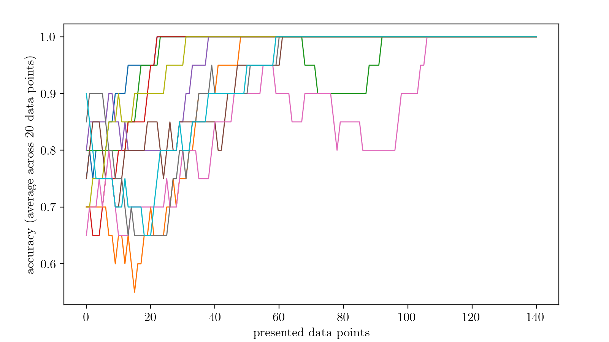

Examples
This page demonstrates two examples of how the implemented code can be used:
Simulation of SNN: a network of adaptive LIF neurons is simulated for 10 seconds.
Training of SNN: a three-layer spiking neural network (SNN) with LIF neurons is trained to solve the XOR problem.
The configuration files required to run these examples are provided in the src/build and src/build/example directories.
Simulation of SNN
In this example we simulate the network illustrated in the figure below, where red arrows represent excitatory projections and blue arrows indicate inhibitory connections:

To build this network, the necesary configuration files are:
subnets_config_yaml: specify network composition and features of the neurons in each SubNetwork:# list of the populations with their parameters - name: S neuron_model: aeif_cond_exp desidered_output_path: none specific_I_e_file: none offset_I_e_file: none train_offset_I_e: false train_order: -1 N: 100 C_m: 40. # pF E_L: -55.1 # mV E_ex: 0. # mV E_in: -65. # mV V_res: -60. # mV V_th: -54.7 # mV g_L: 1. # nS t_ref: 0.0 # ms I_e: -38.0 # pA osc_amp: 5.0 # pA osc_omega: 0.314 # kHz (50 Hz) dev_ext_weight: 0.05 # nS ext_in_rate: 0.25 # kHz osc_amp_poiss: 0. # kHz osc_omega_poiss: 0. # kHz tau_syn_ex: 10. # ms tau_syn_in: 5.5 # ms a_adaptive: 2.5 # nS b_adaptive: 70. # pA tau_w_adaptive: 20. # ms delta_T_aeif_cond_exp: 1.7 # mV V_peak: 15. # mV - name: T neuron_model: aeif_cond_exp desidered_output_path: none specific_I_e_file: none offset_I_e_file: none train_offset_I_e: false train_order: -1 N: 200 C_m: 40. E_L: -55.1 E_ex: 0. E_in: -65. V_res: -60. V_th: -54.7 g_L: 1. t_ref: 0.0 I_e: -150.0 osc_amp: 0.0 osc_omega: 0.0 dev_ext_weight: 0.05 ext_in_rate: 0.1 osc_amp_poiss: 0. osc_omega_poiss: 0. tau_syn_ex: 10. tau_syn_in: 5.5 a_adaptive: 2.5 b_adaptive: 70. tau_w_adaptive: 20. delta_T_aeif_cond_exp: 1.7 V_peak: 15.
weights_config_yaml: connection weights (in nS) with the convention thatpositive weights are excitatory
negative weights are inhibitory
# weights of connections TO :name: - name: S S: -1.2 # S receives inhibitory inputs from S ext: 0.45 # S receives excitatory inputs from ext - name: T S: 0.3 # T receives excitatory inputs from S ext: 0.1 # T receives excitatory inputs from ext
connections_config_yaml: connectivity probabilities between subnetworks and corresponding delays (in ms)# Connections probabilities and delays FROM "name" - name: S S: 0.2 # each S neuron project to each S neuron with probability 0.2 S_delay: 0.5 S_file: none S_train: false S_quant_alpha: -1. T: 0.8 # each S neuron project to each T neuron with probability 0.8 T_delay: 1.0 T_file: none T_train: false T_quant_alpha: -1.
to_save_config_yaml: list of neurons whose state you want to save at each step# list of the neurons whose state is to be saved at each time step - S: [0,1] - T: [3,5,7]
Simulation configuration and execution
Once the Network is configured you can set the simulation control variables in a yaml file <sim-name>.yaml (e.g., example.yaml in src/build/example/NoTrain):
t_end: 10000 # ms dt: 0.1 # ms n_step: 20 out_dir: example/NoTrain/sim subnets_config_yaml: example/NoTrain/config.yaml weights_config_yaml: example/NoTrain/config_weights.yaml connections_config_yaml: example/NoTrain/config_connections.yaml to_save_config_yaml: example/NoTrain/config_to_save.yaml training_config_yaml: none input_mode: 0 input_mode_config: unused train: false repeat_specific_I_e: 1
Note
the variable
n_stepcan be used to execute the simulation in more than one step. This is useful for issues related to memory consumption (in case of long simulations with many neurons increase the value of n_step for better performance)the
example/NoTrain/simoutput directory is automatically created
And finally run the simulation using (from the build directory):
$ ./main example/NoTrain/example.yaml
Output of the simulation
After the simulation has finished, you will find the following files in the output directory:
a copy of the configuration files used for the simulation
some files containing the spiking times of the neurons separately for each SubNetwork and with format:
<neuron-index> <list-of-spike-times>
a directory
neuron_statescontaining:a file
t.txtcontaining the time steps of the simulationa file
<SubNetwork-name>_<neuron-index>.txtfor each neuron indicated into_save_config_yamlcontaining the statexof the neuron at each time step
Note
if no neuron is indicated in
to_save_config_yaml, theneuron_statesdirectory will not be produced
Basic analysis of the results
Using the code below (in the build directory):
import sys
sys.path.append('..')
import python_utils as utils
s = utils.SpikeSim("example/NoTrain/sim", 'example.yaml', 500, 10000., 'config.yaml')
s.info()
s.histogram('all', res = 10.)
for (k,v) in (s.MeanActivity()).items():
print(f'Mean activity of {k} \t {v[0]:.2f} kHz\t N_neurons = {v[1]} \t Activity per Neuron = {v[2]*1000:.4f} Hz')
you can easily visualize the results of the simulation.
Training of SNN
In this example we solve the XOR problem employing a SNN of LIF neurons with exponential synapses. The XOR problem is a classic problem in artificial neural network research which consists into training a neural network to predict the outputs of XOR logic gates given two binary inputs. A XOR function returns true when the inputs are different and false when they are the same:
A |
B |
A XOR B |
|---|---|---|
False |
False |
False |
True |
False |
True |
False |
True |
True |
True |
True |
False |
To do so, we employ a three layer architecture:
L1: input layer (2 neurons, associated with inputs A and B respectively)L2: hidden layer (8 neurons)L3: output layer (2 neurons, associated with the labels True and False respectively)
To encode the input values A and B we set a high input current (50 pA) for True and low input current (30 pA) for False, independently for the two neurons in L1.
For demonstration purposes, we set the configuration files to train all weights from L1 to L2, and from L2 to L3, as well as the input baseline currents of L2.
To setup the described architecture we employ the following configuration files:
subnets_config_yaml: specify network composition and features of the neurons in each SubNetwork:# list of the layers with their parameters - name: L1 neuron_model: iaf_curr_exp desidered_output_path: none specific_I_e_file: example/Train/specific_Ie/L1.txt offset_I_e_file: none train_offset_I_e: false offset_I_e_min: 0. offset_I_e_max: 0. offset_I_e_ref: 0. ldecay_offset: 0. train_order: -1 N: 2 C_m: 40. g_L: 2. E_L: -70. V_res: -70. V_th: -50. t_ref: 2. I_e: 0. ext_in_rate: 1. tau_syn_ex: 10. tau_syn_in: 10. osc_amp: 0. osc_omega: 0. dev_ext_weight: 0. osc_amp_poiss: 0. osc_omega_poiss: 0. w_max: 1000. w_min: -1000 decay_factor_max: 0. decay_factor_steepness: 0. decay_factor_position: 0. - name: L2 neuron_model: iaf_curr_exp desidered_output_path: none specific_I_e_file: none offset_I_e_file: example/Train/specific_w/L2.txt train_offset_I_e: true offset_I_e_min: -100 offset_I_e_max: 100. offset_I_e_ref: 0. ldecay_offset: 0. train_order: 1 N: 8 C_m: 40. g_L: 2. E_L: -70. V_res: -70. V_th: -50. t_ref: 2. I_e: 36. ext_in_rate: 1. tau_syn_ex: 10. tau_syn_in: 10. osc_amp: 0. osc_omega: 0. dev_ext_weight: 0. osc_amp_poiss: 0. osc_omega_poiss: 0. w_max: 1000. w_min: -1000 decay_factor_max: 0. decay_factor_steepness: 0. decay_factor_position: 0. - name: L3 neuron_model: iaf_curr_exp desidered_output_path: example/Train/desired_out/L3.txt specific_I_e_file: none offset_I_e_file: none train_offset_I_e: false offset_I_e_min: -100 offset_I_e_max: 100. offset_I_e_ref: 0. ldecay_offset: 0. train_order: 0 N: 2 C_m: 40. g_L: 2. E_L: -70. V_res: -70. V_th: -50. t_ref: 2. I_e: 31. ext_in_rate: 1. tau_syn_ex: 10. tau_syn_in: 10. osc_amp: 0. osc_omega: 0. dev_ext_weight: 0. osc_amp_poiss: 0. osc_omega_poiss: 0. w_max: 1000. w_min: -1000 decay_factor_max: 0. decay_factor_steepness: 0. decay_factor_position: 0.
weights_config_yaml: connection weights (in nS, positive weights are excitatory):- name: L1 ext: 0. - name: L2 ext: 0. L1: none - name: L3 ext: 0. L2: none
connections_config_yaml: connectivity probabilities between subnetworks, corresponding delays (in ms) and path to initialization weights:- name: L1 L2: 1. # probability L2_delay: 2. L2_file: example/Train/specific_w/L1_to_L2.txt L2_train: true L2_quant_alpha: -1. - name: L2 L3: 1. # probability L3_delay: 2. L3_file: example/Train/specific_w/L2_to_L3.txt L3_train: true L3_quant_alpha: -1.
to_save_config_yaml: list of neurons whose state you want to save at each step- L1: [0] - L2: [0] - L3: [0,1]
batches_dur_file: contains the duration of the mini-batches employed during training1000. 1000. 1000. 1000. 1000. 1000. 1000. 1000. 1000. 1000.
To handle the training process we employ a python3 script which:
set up initialization weights and baseline currents (of L2);
set up the configuration files:
general_config_yaml: sets the general configuration variables:t_end: 10000 # ms dt: 1. # ms n_step: 1 # unused out_dir: example_config/Train/res0/0 training_config_yaml: example_config/Train/config_training1.yaml subnets_config_yaml: example_config/Train/config1.yaml weights_config_yaml: example_config/Train/config_weights1.yaml connections_config_yaml: example_config/Train/config_connections1.yaml to_save_config_yaml: example_config/Train/config_to_save1.yaml input_mode: 0 # unused input_mode_config: unused train: true repeat_specific_I_e: 1
general_config_yaml: sets the general configuration variable for training:epoch: 0 dur_batches_path: example_config/Train/batches_dur.txt window_res: 1000.0 step_res: 500.0 w_cut: 100. POT: 1 error_lin_coeff: 0. prob_noise: 0. amp_noise: 0. l_decay: 0. l_rate0: 25.0 l_rate0_curr: 50 # 2.5 optimization_method: SGD momentum_w: 0.0 momentum_c: 0.0 momentum2_w: 0.95 # used only in ADAM momentum2_c: 0.95 # used only in ADAM correct_l_rates: [ 1., 1. ] dF_dI_app: 0.002 dF_dI_no_act_fact: 0.1 epsilon_zero_act: 0.1 a_desid_zero: 0. c_desid_zero: 1. n_quant: -1. quant_delta_weight_neg: 0. quant_delta_weight_pos: 0.
compute the accuracy
repeat the training protocol for 10 times.
As shown below, the problem is resolved after only a few data points are presented during training.
{kind=link}
Note
for simplicity, in this example we processed each input data point individually in separate epochs. This strategy is not raccomended in more complex problems.
The employed code is provided below:
import numpy as np
import matplotlib.pyplot as plt
import os
import sys
from subprocess import run
from tqdm import tqdm
sys.path.append('../')
import python_utils as utils
REPS = 10
out_dir = 'example/Train'
''' The out_dir should already exists with the following files:
- config1.yaml
- config_connections1.yaml
- config_weights1
- config_to_save1.yaml
- batches_dur.txt
These files should be initialized as indicated in the tutorials.
'''
total_datapoints = 160
single_input_dur = 10 # seconds change also in batches.txt
n_hidden = 8 # change also in config1.yaml
high_inp = 50
low_inp = 30
high_out_fr = 15 # hertz
low_out_fr = 5
noise_sigma = 0.1
time_shift = 0.5 # seconds
time_window = 1.0 # seconds
for dir in ['specific_w', 'specific_Ie', 'desired_out']:
if not os.path.exists(f'{out_dir}/{dir}'):
os.makedirs(f'{out_dir}/{dir}')
for rep in range(REPS):
res_dir = f'res{rep}'
if os.path.exists(f'{out_dir}/{res_dir}'):
print(f'{out_dir}/{res_dir} already exists')
exit()
else:
os.makedirs(f'{out_dir}/{res_dir}')
os.makedirs(f'{out_dir}/{res_dir}/log')
def str_line(ind, v):
str_i = str(ind)
str_v = "\t".join([ f'{j:.2f}' for j in v ])
return "\t".join([ str_i, str_v ])
hist_acc = []
pbar = tqdm(range(total_datapoints))
for data_point in pbar:
input_data = np.random.randint(0,4)
# print(f'starting datapoint {data_point} ({input_data})')
# setup data points
outT = np.zeros(int(single_input_dur/time_shift)) + low_out_fr*time_window # out True
outF = np.zeros(int(single_input_dur/time_shift)) + low_out_fr*time_window # out False
if input_data==0:
inp0 = low_inp + np.random.normal(0, noise_sigma, size=single_input_dur*1000)
inp1 = low_inp + np.random.normal(0, noise_sigma, size=single_input_dur*1000)
outF = outF + high_out_fr*time_window
des_out = 1
elif input_data==1:
inp0 = high_inp + np.random.normal(0, noise_sigma, size=single_input_dur*1000)
inp1 = low_inp + np.random.normal(0, noise_sigma, size=single_input_dur*1000)
outT = outT + high_out_fr*time_window
des_out = 0
elif input_data==2:
inp0 = low_inp + np.random.normal(0, noise_sigma, size=single_input_dur*1000)
inp1 = high_inp + np.random.normal(0, noise_sigma, size=single_input_dur*1000)
outT = outT + high_out_fr*time_window
des_out = 0
elif input_data==3:
inp0 = high_inp + np.random.normal(0, noise_sigma, size=single_input_dur*1000)
inp1 = high_inp + np.random.normal(0, noise_sigma, size=single_input_dur*1000)
outF = outF + high_out_fr*time_window
des_out = 1
# setting up input
input_string = ''
for i_inp, inp in enumerate([inp0, inp1]):
input_string += str_line(i_inp, inp) + '\n'
with open(f'{out_dir}/specific_Ie/L1.txt', 'w') as f:
f.write(input_string)
# setting up output
out_string = ''
for i_out, out in enumerate([outT, outF]):
out_string += str_line(i_out, out) + '\n'
with open(f'{out_dir}/desired_out/L3.txt', 'w') as f:
f.write(out_string)
# setting up weights
if data_point==0:
# L1_to_L2
temp_str = ''
for i_neur in range(2):
v_zero = np.abs(np.random.normal(0,15+0.010,n_hidden))
temp_str += str_line(i_neur,v_zero) + '\n'
with open(f'{out_dir}/specific_w/L1_to_L2.txt', 'w') as f:
f.write(temp_str)
np.savetxt(f'{out_dir}/specific_w/L2.txt', np.zeros(n_hidden))
# L2_to_L3
temp_str = ''
for i_neur in range(n_hidden):
v_zero = np.abs(np.random.normal(0,10+0.010,2))
temp_str += str_line(i_neur,v_zero) + '\n'
with open(f'{out_dir}/specific_w/L2_to_L3.txt', 'w') as f:
f.write(temp_str)
np.savetxt(f'{out_dir}/specific_w/L3.txt', np.zeros(2))
else:
os.system(f'cp {out_dir}/{res_dir}/{data_point-1}/specific_weights/L1_to_L2_{data_point-1}.txt {out_dir}/specific_w/L1_to_L2.txt')
os.system(f'cp {out_dir}/{res_dir}/{data_point-1}/specific_weights/L2_to_L3_{data_point-1}.txt {out_dir}/specific_w/L2_to_L3.txt')
os.system(f'cp {out_dir}/{res_dir}/{data_point-1}/specific_weights/L2_{data_point-1}.txt {out_dir}/specific_w/L2.txt')
training_string = f'''t_end: {single_input_dur*1000} # ms
dt: 1. # ms
n_step: 1 # unused
out_dir: {out_dir}/{res_dir}/{data_point}
training_config_yaml: {out_dir}/config_training1.yaml
subnets_config_yaml: {out_dir}/config1.yaml
weights_config_yaml: {out_dir}/config_weights1.yaml
connections_config_yaml: {out_dir}/config_connections1.yaml
to_save_config_yaml: {out_dir}/config_to_save1.yaml
input_mode: 0 # unused
input_mode_config: unused
train: true
repeat_specific_I_e: 1
'''
with open(f'{out_dir}/training.yaml', 'w') as f:
f.write(training_string)
config_training_string = f'''epoch: {data_point}
dur_batches_path: {out_dir}/batches_dur.txt
window_res: {time_window*1000}
step_res: {time_shift*1000}
w_cut: 100.
POT: 1
error_lin_coeff: 0.
prob_noise: 0.
amp_noise: 0.
l_decay: 0.
l_rate0: {0.5*50}
l_rate0_curr: {50} # {0.5*5}
optimization_method: SGD
momentum_w: {0.}
momentum_c: {0.}
momentum2_w: {0.95} # used only in ADAM
momentum2_c: {0.95} # used only in ADAM
correct_l_rates: [ 1., 1. ]
dF_dI_app: {0.002}
dF_dI_no_act_fact: {0.1}
epsilon_zero_act: 0.1
a_desid_zero: 0.
c_desid_zero: 1.
n_quant: -1.
quant_delta_weight_neg: 0.
quant_delta_weight_pos: 0.
'''
with open(f'{out_dir}/config_training1.yaml', 'w') as f:
f.write(config_training_string)
with open(f'{out_dir}/{res_dir}/log/std_out_{data_point}.txt', 'w') as f_out:
with open(f'{out_dir}/{res_dir}/log/std_err_{data_point}.txt', 'w') as f_err:
run(f'./main {out_dir}/training.yaml', shell=True, stdout=f_out, stderr=f_err, text=True)
sim = utils.SpikeSim( f'{out_dir}/{res_dir}/{data_point}', f'training.yaml', 0, neglect_t_end=-1, config_fname='config1.yaml' )
if len(sim.data['L3'][0])>len(sim.data['L3'][1]):
most_active = 0
else:
most_active = 1
if most_active==des_out:
hist_acc.append(1)
else:
hist_acc.append(0)
pbar.set_description(f'rep {rep+1}/{REPS} -- accuracy (mean 20): {np.mean(hist_acc[-20:]):.3f}')
np.savetxt(f'{out_dir}/{res_dir}/hist_acc.txt', hist_acc)
mean_hist = 20
hist_acc = np.convolve(hist_acc, np.ones(mean_hist)/mean_hist, 'valid')
plt.plot(hist_acc)
plt.xlabel('presented data points')
plt.ylabel(f'accuracy (average across {mean_hist} data points)')
plt.show()
Please set up the configuration files subnets_config_yaml, weights_config_yaml, connections_config_yaml, to_save_config_yaml, batches_dur_file in the output directory src/build/example/Train and run this code from the build to replicate the experiment.